라이프치히로 가는 길 (14) - 나폴레옹의 무기를 빼앗다
게시: 2025-02-03T06:30:23+09:00
1813년 10월 초, 나폴레옹과 연합군의 대치 상태에서 분명히 전체 병력수는 연합군에게 유리했습니다. 연합군은 러시아에서 새로 편성되어 보헤미아 일대에 도착한 폴란드 방면군을 포함하면 약 32만의 병력을 가지고 있었고, 나폴레옹은 약 22만의 병력 밖에 없었습니다. 이건 실질적으로 제갈공명도 극복하기 어려운 전력 차이였는데, 역사적으로 이렇게 어느 한쪽에게 압도적으로 불리한 상태에서 벌어진 전투는 찾기 힘듭니다. 이유는 그렇게 병력 차이가 많이 날 경우 약한 쪽이 전투를 회피하고 후퇴했기 때문이었습니다. 보통 후퇴를 하다 보면 추격하는 측의 병력은 점령지 여기저기 수비군을 남기느라 병력이 줄어들 수 밖에 없습니다. 그게 계속 되다보면 결국 약한 쪽에게도 기회가 생기기 마련입니다. 1812년 나폴레옹이 망했던 이유가 바로 그거였지요. 그런데도 불구하고 나폴레옹은 작센에서 꿋꿋히 버텼고, 의외로 대치 상태에서 크게 불리하지 않았습니다. 이유는 바로 내선이동 (interior lines movement)의 이점 때문이었습니다. 연합군은 남북동 3개 방면으로 분산되어 있었던 것에 비해 나폴레옹의 그랑다르메는 그 안쪽의 훨씬 좁은 지역에 모여 있었습니다. 따라서 연합군의 3개 방면군 중 어느 하나가 도전해오면 그랑다르메는 재빨리 그 방향으로 병력을 집중시켜 그 방면군을 패배시킬 수 있었고, 그때 연합군의 다른 2개 방면군은 더 먼 거리를 이동해야 하므로 제때에 도움을 주기 어려웠습니다. 가령 1797년 1월 북부 이탈리아 리볼리(Rivoli) 전투에서도 2만8천의 오스트리아군에 2만2천의 병력으로 대응한 나폴레옹은 압승을 거두고 제1차 대불동맹전쟁을 사실상 끝장냈는데, 그 때도 나폴레옹은 내선이동의 장점을 교과서적으로 잘 살려 이런 쾌승을 거둘 수 있었던 것입니다.
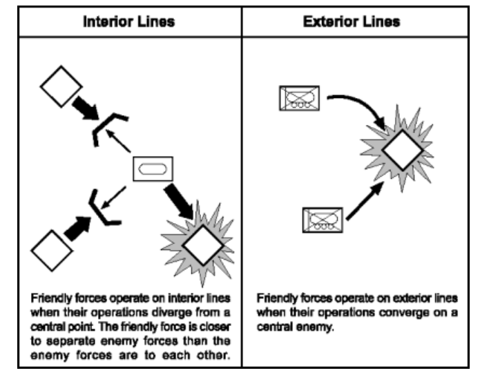
(물론 내선을 차지하는 쪽이 언제나 유리한 것은 아닙니다. 경우에 따라서는 외선을 차지한 쪽이 유리할 수도 있습니다. 대표적인 것이 포위공격이지요.)
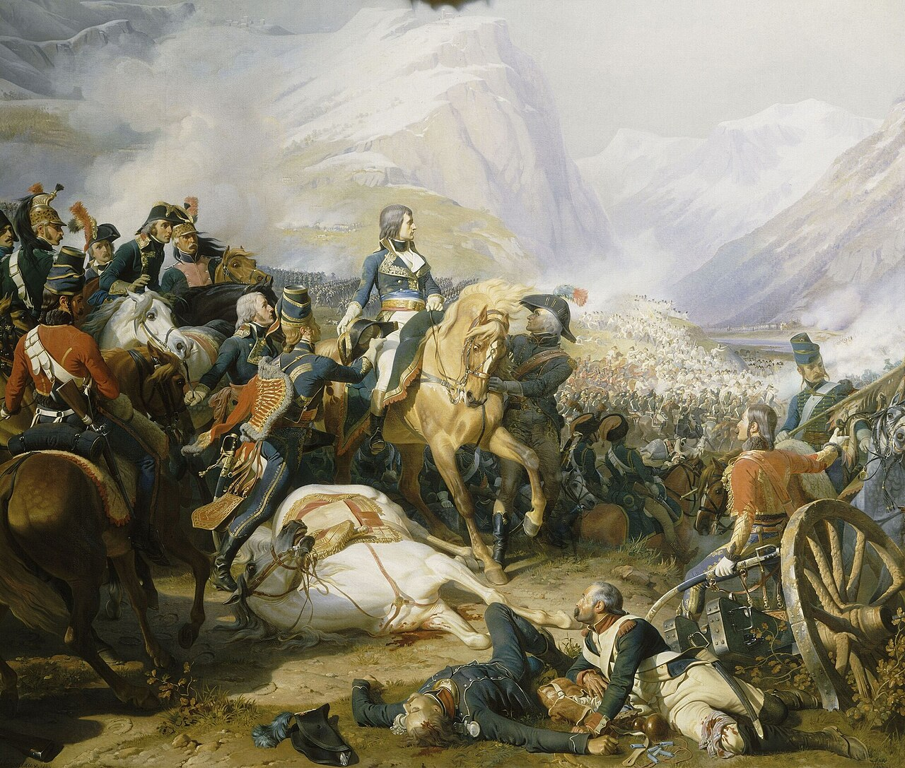
(리볼리 전투는 무협지로 따지면 나폴레옹의 정종공부(正宗功夫)가 그대로 드러나는 정말 교과서적인 전투였습니다.)
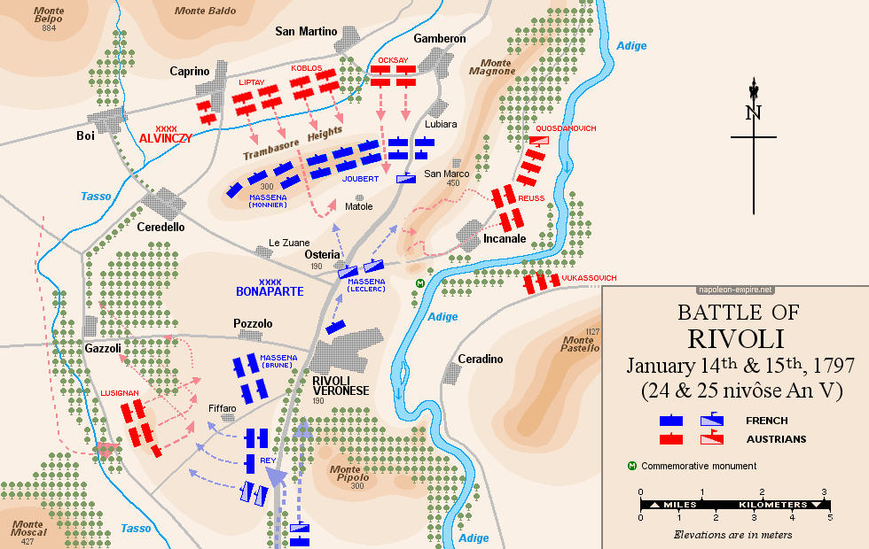
(리볼리 전투의 상황도입니다. 나폴레옹이 내선이동의 장점을 100% 활용하는 모습이 보입니다.) 나폴레옹이 이렇게 내선이동의 장점을 쥐고 있다는 점은 연합군 3개 방면군 사령관들의 골칫거리였습니다. 그걸 해결하기 위해 만든 것이 트라헨베르크 의정서로서, 이 작전안의 핵심은 보헤미아 방면군이 나폴레옹을 칠 때, 북부 방면군과 슐레지엔 방면군이 재빨리 나폴레옹의 측면과 후면을 물고 늘어진다는 것이었습니다. 문제는 무전기도 항공기도 트럭도 없던 시절, 3개 방면군끼리 급보를 주고 받는 데만도 하루 이상이 걸렸으므로, 보헤미아 방면군이 드레스덴의 나폴레옹을 들이칠 때 데사우-로슬라우 일대에 있던 북부 방면군의 베르나도트가 그걸 재빨리 파악하고 지원하기는 쉽지 않았다는 점입니다. 그 결과가 바로 8월 26일의 드레스덴 전투였습니다. 블뤼허의 슐레지엔 방면군을 추격하던 나폴레옹은 보헤미아 방면군이 드레스덴을 공격한다는 소리에 근위대를 이끌고 재빨리 회군하여 수적으로 우세했던 보헤미아 방면군을 패퇴시켰습니다.
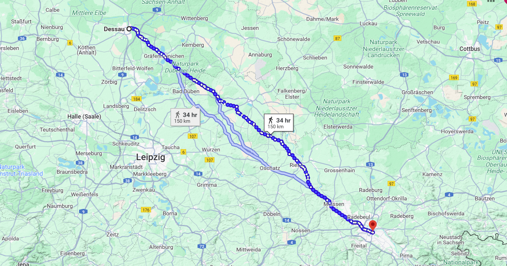
(참고로 데사우에서 드레스덴까지는 약 150km로서, 서울-대전(143km)보다 약간 더 먼 거리입니다.) 결국 연합군이 나폴레옹을 상대로 승리하기 위해서는 내선을 차지한 그랑다르메보다 더 빠른 집결이 필요했지만, 더 먼 거리 덕분에 그건 불가능했습니다. 하지만 더 빠른 이동은 불가능하더라도 몰래 이동하는 것이 가능하다면 이야기는 달라질 수 있었습니다. 때마침 나폴레옹은 9월 24일, 사소하다면 사소하다고 할 수 있는 실수를 하나 저지릅니다. 블뤼허와 대치 중이던 막도날의 보버 방면군을 해체하고 드레스덴으로 끌어들인 뒤, 엘베강 우안을 사실상 포기하고 엘베강을 방어선으로 삼은 것입니다. 나폴레옹이 이런 결정을 내린 것은 네와 막도날 등 수하의 원수들이 덴너비츠 전투와 카츠바흐 전투 등 베르나도트와 블뤼허와의 국지전에서 계속 패배하고 있었기 때문이었습니다만, 이건 과거의 젊고 투지 넘치는 나폴레옹이라면 내리지 않았을 소극적 결정이었습니다. 나폴레옹은 '벽을 쌓는 측이 언제나 진다'라는 격언대로, 수비보다는 공격으로 전세를 풀어나가는 지휘관이었습니다. 그런데 이렇게 기나긴 엘베강을 방어선으로 삼는다는 것은 젊은 나폴레옹이 반복하여 패배시켰던 오스트리아의 늙은 장군들이나 펼칠 작전이었고, 뜻하는 대로 일이 풀리지 않자 그냥 자신의 소굴로 돌아가 담을 쌓고 외부와의 단절을 선언하는 듯한 모양새였습니다.
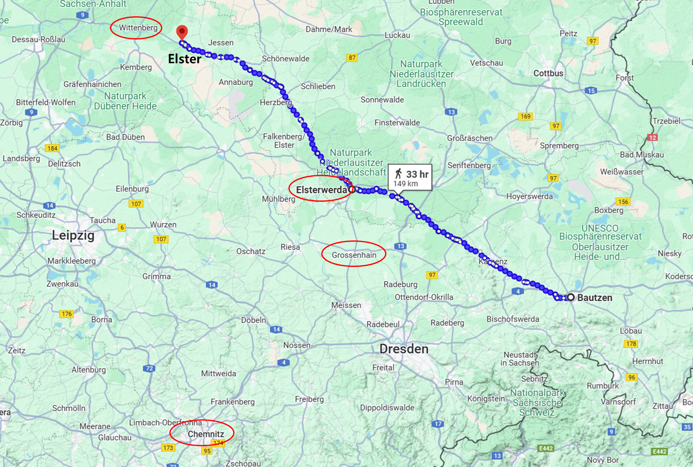
(말이 쉽지 1개군 7만여 명이 150km를 적군에게 들키지 않고 이동하는 것은 결코 쉬운 일이 아닙니다.) 그리고 블뤼허, 정확하게는 그의 참모장이었던 그나이제나우는 나폴레옹의 그런 실수를 놓치지 않고 활용합니다. 대치하던 막도날이 엘베 강변으로 물러나 직접적인 감시가 없어진 틈을 놓치지 않고, 즉각 슐레지엔 방면군 전체를 나폴레옹 몰래 북서쪽으로 5일간 150km나 강행군시켜 엘스터로 향한 것입니다. 여기서 블뤼허는 전편에서 다룬 바르텐부르크 전투에서 엘베강을 지키던 베르트랑을 패배시키고 드디어 엘베강을 건넜습니다. 베르트랑의 패배는 전투 시작 전부터 이미 결정된 것이었습니다. 블뤼허가 거느린 것은 9만에 달하는 슐레지엔 방면군 전체였고, 베르트랑의 병력은 불과 1~2만 수준의 제4군단 하나뿐이었으니까요. 블뤼허가 바르텐베르크 전투에서 거둔 승리는 사실상 피루스의 승리였습니다. 전편에서 묘사한 대로, 지형지물을 잘 살려서 효과적인 방어전을 펼친 베르트랑에게 프로이센군은 큰 피해를 입어 사상자가 2천명이 넘었으나, 베르트랑은 고작 5백 정도의 사상자를 냈을 뿐이었습니다. 하지만 그 날 밤 바르텐부르크 성에서 블뤼허는 성대하게 승전 축하 파티를 벌였고, 그 자리에 참석한 부하들에게 연설을 하다가 죽은 샤른호스트의 열망이 거의 이루어진 것처럼 감정에 북받쳐 자신의 부관으로 일하던 샤른호스트의 아들의 어깨를 붙잡고 감격하기도 했습니다. 그럴 만도 했습니다. 바르텐부르크 전투에서 큰 희생을 치렀지만 엘베강 방어선을 뚫은 것은 큰 의의가 있었습니다. 나폴레옹이 가진 내선이동이라는 결정적인 이점을 완전히 붕괴시킨 것이기 때문입니다. 이제 블뤼허는 바로 지근거리에 있는 베르나도트의 북부 방면군과 합세하여 네의 베를린 방면군을 몰아칠 수 있는 유리한 위치에 서게 되었습니다.
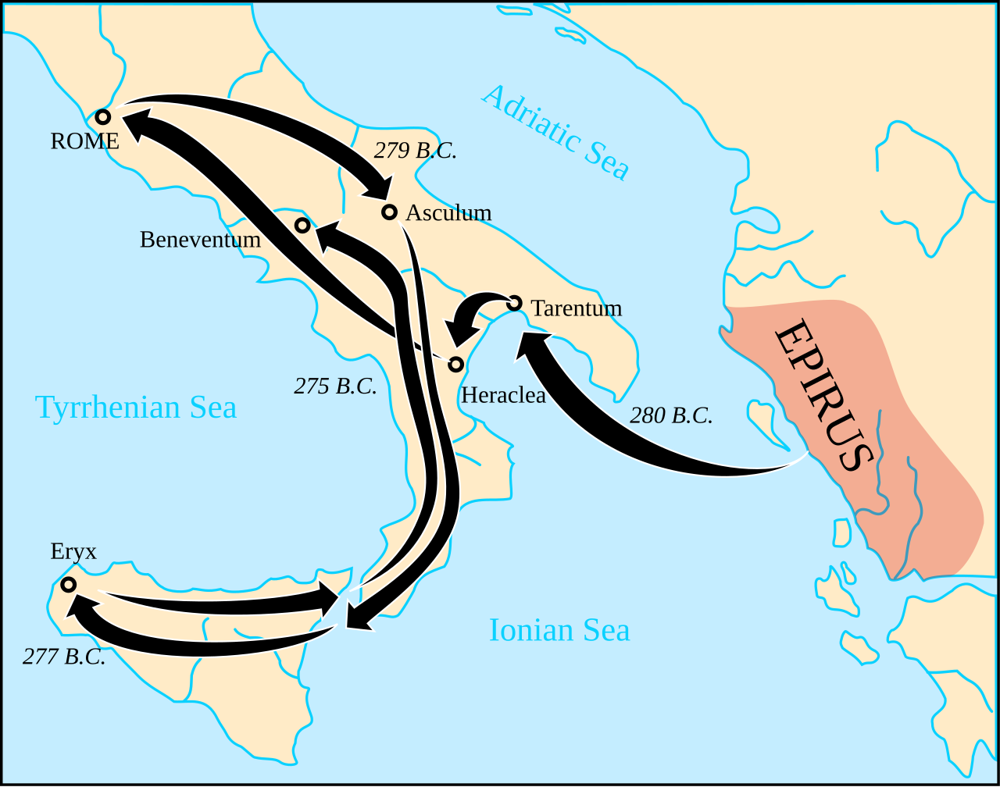
(피루스의 승리란 기원전 3세기 에피루스의 왕이었던 피루스가 이탈리아 원정에 나섰다가, 아직 세력이 약하던 로마와 기원전 279년 아스쿨룸(Asculum)에서 싸워 이긴 뒤 내뱉은 말에서 유래합니다. 양측 병력은 각각 4만으로서 비슷했고, 사상자로 로마는 6천, 피루스군은 3천5백 정도로 로마가 훨씬 더 큰 피해를 입었지만 피루스는 휘하의 유능한 지휘관을 다수 잃은데다 당시 그리스인들이 야만인 정도로 멸시하던 로마군에게 생각하지 않은 고전을 겪었으므로, 피루스는 '이런 승리를 한 번 더 거둔다면 우린 모두 망할 것이다'라고 말했다고 합니다.)
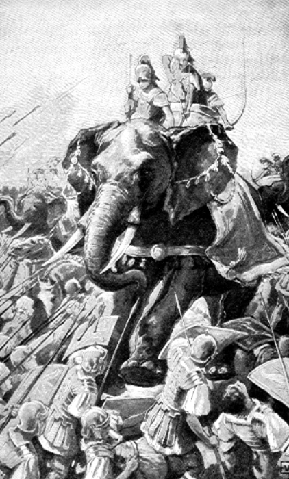
(피루스는 유럽 대륙에서 최초로 전투 코끼리를 사용한 것으로 유명합니다. 그는 이집트 프톨레미우스에게 빌린 전투 코끼리 20마리를 기원전 280년 헤라클레아(Heraclea) 전투에서 처음 투입하여 이런 짐승을 처음 본 로마군에게 충격과 공포를 안겨주며 대승을 거두었습니다. 그러나 불과 1년 뒤인 아스쿨룸 전투에서 로마군은 이미 창검이 고슴도치처럼 꽂힌 수레와 화염 뭉치를 이용한 대전차, 아니 대(對)코끼리 무기를 준비하여 전투 코끼리에 대해서도 잘 싸웠습니다.)
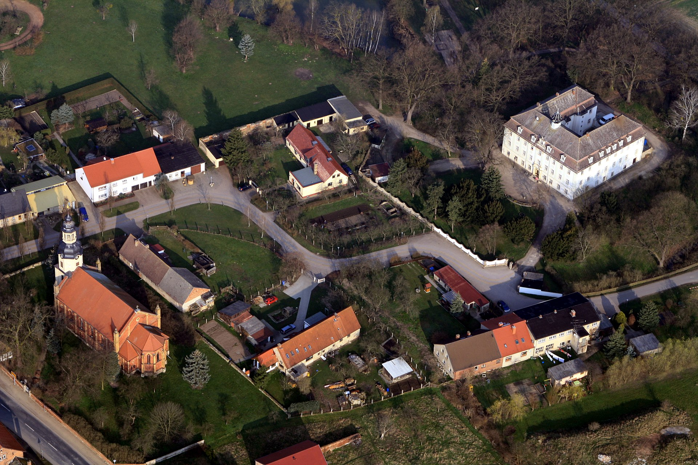
(사진 속 오른쪽의 3층짜리 ㄷ자 모양의 하얀 건물이 바르텐부르크 성(Schloss Wartenburg)입니다. 성이라고 하면 뭔가 디즈니랜드에 있는 그런 성을 연상하시기 쉽지만 보시다시피 그냥 평범(?)한 건물입니다. 17세기에 지어진 건물인데, WW2 이후 동독 정권은 이 곳을 고아들을 위한 보육원과 학교로 만들었습니다.)
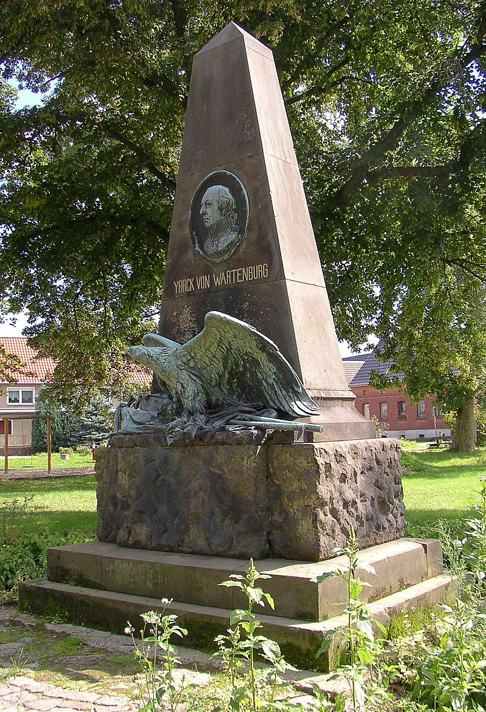
(물론 바르텐부르크 성에는 요크 백작의 바르텐부르크 전투 승전비가 서있습니다.)
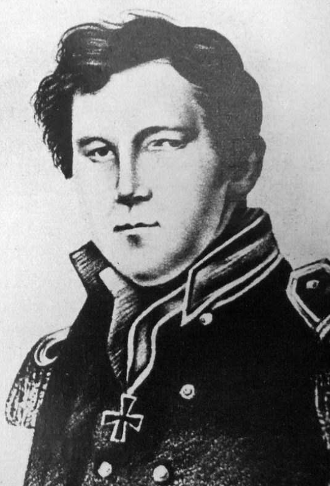
(이 그림은 진짜인지 좀 의심스럽긴 한데, 아무튼 샤른호스트의 맏아들인 하인리히 빌헬름 샤른호스트(Heinrich Wilhelm Gerhard von Scharnhorst)의 초상화라고 알려진 것입니다. 당시 27세였던 젊은 샤른호스트는 중위 계급으로 블뤼허의 참모 중 하나로 복무하고 있었고, 블뤼허는 죽은 아빠 샤른호스트 때문에라도 그를 무척이나 아꼈지만 골려먹기도 자주 골려먹었습니다. 가장 유명한 일화는 카츠바흐 전투 직후 비에 흠뻑 젖은 채로 행군하다 어떤 장원 건물에 숙소를 정하고 저녁을 먹을 때의 일입니다. 당시 프로이센군 전체가 식량이 부족한 상황이라서 블뤼허와 그나이제나우를 포함한 그 일행이 둘러 앉은 식탁에 올라온 음식은 딱 한 종류, 방금 밭에서 캐내 삶은, 무럭무럭 김이 나는 감자 뿐이었습니다. 그때 식탁 말석에 앉아 있던 젊은 샤른호스트가 초조한 표정으로 주변을 두리번거리는 것을 본 블뤼허는 감자를 먹다 말고 무슨 일이냐고 물었는데, 샤른호스트는 '혹시 소금이 있을까 찾고 있었다'라고 말하자 식탁에 앉은 장군들에게 '이 젊은 친구는 미식가라서 소금을 다 찾는구먼!'이라고 크게 웃으며 놀렸다고 합니다. 다만 이 젊은 샤른호스트는 아빠 같은 능력은 없었는지, 이후로도 별다른 업적을 남기지는 못했습니다.) 바르텐부르크 전투의 최대 수혜자는 여기서 결정적인 공적을 세우고 바르텐부르크 백작이라는 작위까지 얻은 요크 장군이라고 생각될 수 있지만, 실은 진짜 수혜자는 베르나도트였습니다. 무엇보다, 베르나도트는 그나이제나우가 처음 의도했던 도하지점인 뮐베르크 대신 엘스터-바르텐부르크에서 도강하라고 점잖게 딱 한 마디함으로써 그의 전략적 혜안이 정말 나폴레옹의 원수급이라는 것을 만천하에 자랑할 수 있었습니다. 엘베강 만곡부에 있던 엘스터에서 도강하는 것이 전술적으로 더 유리하다는 것은 기초적인 군사 상식이었지만, 블뤼허로 하여금 뮐베르크가 아니라 훨씬 북쪽이자 베르나도트로부터 더 가까운 엘스터에서 도강하도록 함으로써, 베르나도트는 정말 피 한방울 흘리지 않고 편하게 엘베강을 건널 수 있었던 것입니다. 블뤼허의 슐레지엔 방면군이 바르텐부르크에서 엘베강을 건넜다는 소식이 전해지자, 당장 데사우에서 엘베강을 사이에 두고 베르나도트와 대치하고 있던 네의 베를린 방면군은 남쪽으로 40km 떨어진 델릿쉬(Delitzsch)로 후퇴할 수 밖에 없었습니다. 덴너비츠 전투 이후 크게 위축된 베를린 방면군은 베르나도트의 북부 방면군을 막기도 벅찼는데, 이제 블뤼허의 슐레지엔 방면군에게 우측면이 훤히 노출된 상태에서는 버틸 방법이 없기 때문이었습니다. 이렇게 네가 남쪽으로 후퇴하자, 길이 훤히 열린 베르나도트는 그 뒤를 따라 즉각 부교를 놓고 엘베강을 건너 그 뒤를 추격했습니다. 즉, 나폴레옹의 북쪽 방어선이 우르르 무너지고 있었던 것입니다.
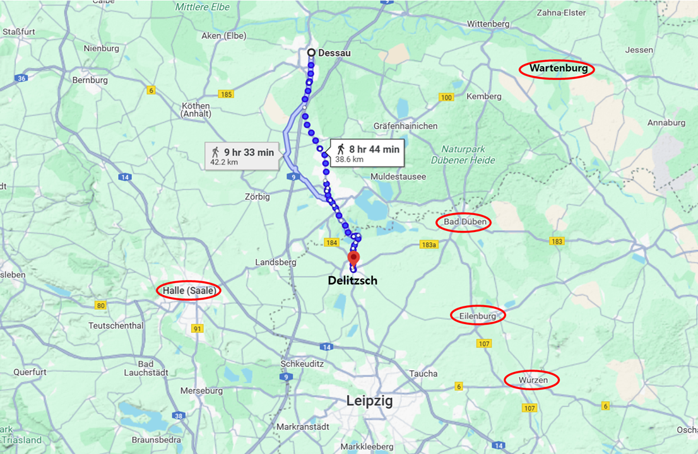
(델릿쉬는 데사우 남쪽 약 40km 지점이고, 거기서 다시 30km 정도를 더 내려가면 라이프치히입니다.) 하지만 아직 나폴레옹의 방어선이 다 무너진 것은 아니었고, 블뤼허와 베르나도트의 침공을 막아낼 시간적 여유와 수단은 충분했습니다. 베르나도트는 여전히 신중한 입장으로서 무턱대고 남쪽으로 달려가자는 입장은 아니었고, 공격적인 블뤼허조차도 보헤미아 방면군과의 협동 작전 없이 자신들만으로 나폴레옹과 정면 대결을 할 수는 없다는 것을 잘 알고 있었습니다. 그래서, 혹시라도 보헤미아 방면군이 밀고 올라오기 전에 나폴레옹이 자신들을 덮칠 경우 안전하게 후퇴할 수단을 마련해놓아야 했습니다. 그래서 블뤼허는 상당수의 병력을 바르텐부르크에 남겨, 만약의 경우 농성할 수 있는 참호와 목책으로 보호된 대규모 진지 공사를 진행했습니다. 이러느라 그랑다르메에게는 며칠 동안 시간이 생겼는데, 당연히 네는 이 모든 상황에 대해 드레스덴의 나폴레옹에게 급보를 날린 상태였습니다. 과연 이 긴급한 순간에 네와 나폴레옹은 어떻게 대처했을까요? Source : The Life of Napoleon Bonaparte, by William Milligan Sloane Napoleon and the Struggle for Germany, by Leggiere, Michael V With Napoleon's Guns by Colonel Jean-Nicolas-Auguste Noël https://www.britannica.com/event/Napoleonic-Wars/Dispositions-for-the-autumn-campaign https://www.napoleon.org/en/history-of-the-two-empires/timelines/1813-and-the-lead-up-to-the-battle-of-leipzig/ http://www.historyofwar.org/articles/campaign_leipzig.html https://en.wikipedia.org/wiki/Battle_of_Rivoli https://www.napoleon-empire.org/en/battles/rivoli.php https://de.wikipedia.org/wiki/Wartenburg_(Kemberg)#Schloss https://ancestors.familysearch.org/en/GMNR-XT9/heinrich-wilhelm-gerhard-von-scharnhorst-1786-1854